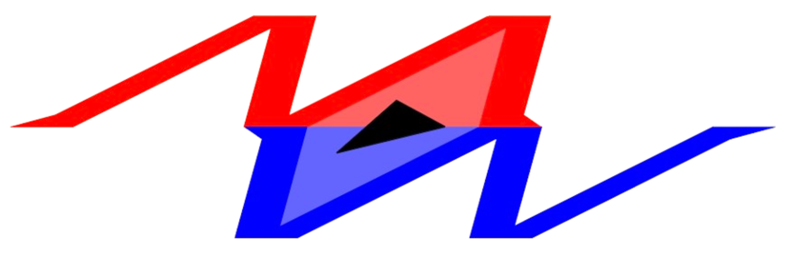
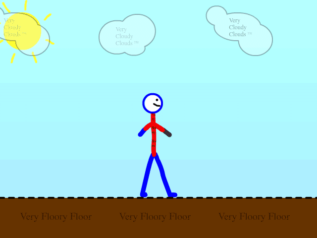
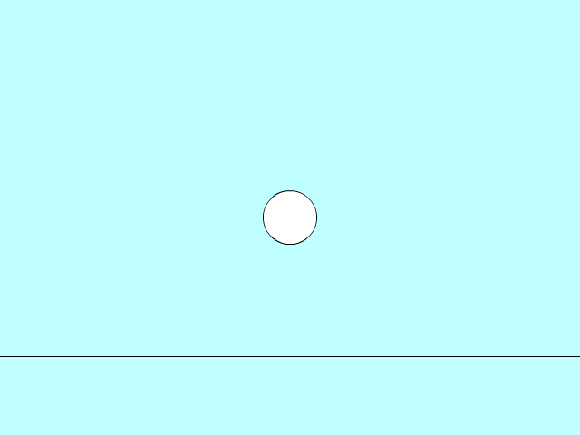
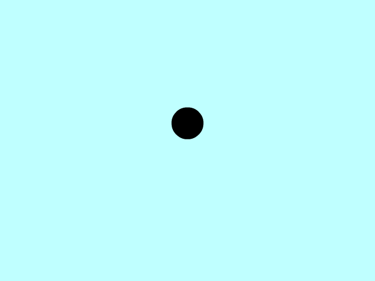
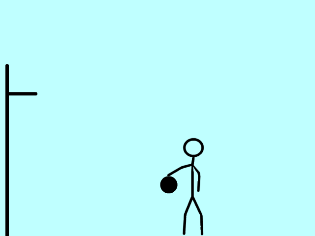
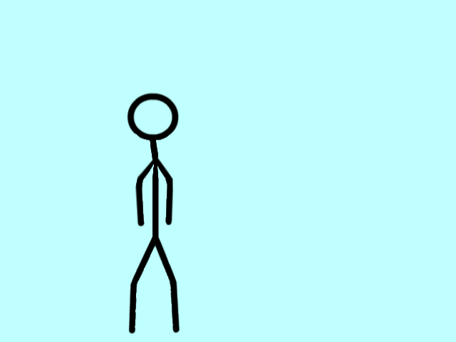

originally, I was just making these animations for an assesment, but then, I found out how fun it could be. I am from australia, and havent really messed with any animation much until now. I first started after being intrested in how it worked, but then in started to enjoy it, until i had it for an assesment of course. Even though the main fun was taken out of it; freedom, i still enjoyed it alot, and decided to try some simple yet complex animations, until i came upon THE WALKING ANIMATION; soon to be the bane of my existence. After I had done the billion bouncing ball animations that everyone has to do, i started researching how to animate better, and follow the basic rules of animation. After i had the basics down, i watched a couple videos about walking, and then, i made it, again and again because animate never saves :(
I started this as a class assessment but kept experimenting and ended up enjoying it. The walking animation was tough — I reworked it many times and learned how small timing changes can make motion feel alive. Losing work from crashes taught me to save often and break tasks into smaller pieces.
Through this project I got better at timing, spacing and organising my files. It began as a grade-chase but turned into a short, fun workflow that I plan to keep exploring.